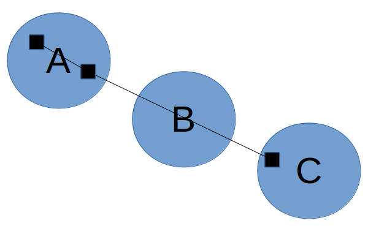
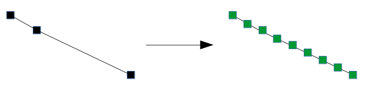
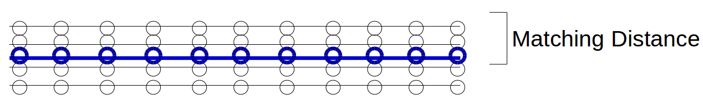
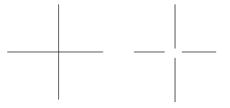

6.1820
Lab 4: Map Inference from GPS Traces
Assigned: 2025-03-20
Due: 2025-04-08
Assigned: 2025-03-20
Due: 2025-04-08
Map inference is a process of automatically producing maps from collected GPS traces. In this lab, each trace contains multiple observations, each of which is a 2D location. While a single trace corresponds to a short drive and each data point is noisy, we can use multiple traces from the same area to collectively infer the underlying road network, reducing noise in individual observations. You will explore two map inference algorithms, k-means clustering and kernel density estimation, as well as evaluation metrics for map inference.
Specifically, you will
The kernel density estimation algorithm is proposed by Biagioni and Eriksson from UIC: Map inference in the face of noise and disparity (VPN to MIT network required; alternate link). You are welcome to read the paper for more detailed background information. It might also be helpful to look at the slides from the 2018 version of the class, which explains both algorithms as well as several evaluation metrics. The code in this lab is adapted from the code from the paper.
Start by downloading the Python code for this lab. These files are included:
infer_kmeans.py: you will implement
k-means clustering map inference algorithm here.infer_kmeans_tests.py: some unit tests
to make sure you implemented infer_kmeans.py
correctly.infer_kde.py: this is a provided
kernel density estimation map inference algorithm that you will evaluate
in Section 2.trace_generator.py: a basic simulator
to synthetically generate GPS traces with a specified level of Gaussian
noise.eval_geo.py: a geometric evaluation
metric.visualize.py: visualize functions for
various spatial data.util.py: various utility functions and
classes to load traces, represent graphs, etc.infer_kde_lib.py: utility functions
for the KDE algorithm.requirements.txt: python dependencies
to be installed by pip.data directory:
cambridge.xml: ground truth data of
Cambridge map (XML).cambridge.graph: ground truth data of
Cambridge map (.graph).trips_uchicago_meters: data from
shuttles on the UIC campus, for Section 2.section3_graphs: simple graphs for
Section 3This code is tested with Python 3.6 and other python libraries, including OpenCV 4.2. (Python 2 is not supported.) Follow the instructions below to use virtualenv and install the required packages.
(Strongly recommended) Install virtualenv and virtualenvwrapper. (See also: another guide.) Run the following two lines:
python -m pip install virtualenv
python -m pip install virtualenvwrapperThen add the following lines to your shell startup file, e.g.
.bashrc, .bash_profile for bash or
.zshrc for zsh (run echo $0 to see which shell
you are using).
export WORKON_HOME=$HOME/.virtualenvs
export PROJECT_HOME=$HOME/Devel
source /usr/local/bin/virtualenvwrapper.shAfter editing it, reload the startup file (e.g., run
source ~/.bash_profile) or open a new terminal.
Note that if you get an error like
/usr/local/bin/virtualenvwrapper.sh: No such file or directory,
that means your virtualenvwrapper.sh is installed somewhere
else, e.g. with anaconda’s python.
$ which python # python3 if you use python3
/Users/username/anaconda/bin/python
$ which virtualenv
/Users/username/anaconda/bin/virtualenv
$ ls /Users/username/anaconda/bin/virtualenv*
# see if there are virtualenvwrapper.sh installed hereYou need to match the path by adding the following lines to your shell startup file instead.
export WORKON_HOME=$HOME/.virtualenvs
export PROJECT_HOME=$HOME/Devel
source /Users/username/anaconda/bin/virtualenvwrapper.shIf you succesfully installed virtualenvwrapper, make a virtualenv
called 6mobile (or a name of your choosing) with python 3.6
or newer. (Python 3.7 and 3.8 should also work.)
mkvirtualenv --python=`which python3.6` 6mobileYou should automatically be in the newly created virtualenv. To
verify, the outputs of which python and
python --version should be similar to this:
$ which python
/Users/username/.virtualenvs/6mobile/bin/python
$ python --version
Python 3.6.xIf you start a new terminal, you can work in this virtualenv by
running workon 6mobile. To switch to the default python,
run deactivate.
Download the starter code, uncompress it and cd into
lab4 directory. From that directory, install required
packages within the virtualenv.
pip install -r requirements.txtAlternatively, if you do not use virtualenv, you can
install packages with the gloabl Python interpreter. If your default
python is not Python 3.6 or newer, use
python3.6 to install pacakages and run the codes.
python -m pip install -r requirements.txtTest your installation.
$ python -c "import cv2; print(cv2.__version__)"
4.2.0You will implement the k-means clustering map inference algorithm. The algorithm operates in four phases:
Get markers. (This phase is already implemented for you.) The algorithm starts by extracting markers to use as points for clustering. Although we could simply use the raw GPS samples/observations as markers, will not work well if the GPS samples are very far apart: recall that in the fourth phase, we pass through each trace, and if successive markers are in different clusters, we connect those clusters; if the samples are too far apart, then we might end up adding an edge that bypasses an intermediate cluster:

Below, we instead add markers at a small fixed distance along the trace. When we add edges later, it is unlikely that the edges will bypass a cluster:

Each marker will be associated with not only a position, but also a
bearing. The bearing indicates which direction the
vehicle associated with the marker is facing, and is measured as an
angle in degrees from the positive x axis. Bearings of the markers
(green dots in the right diagram) are calculated from line segments that
connect consecutive GPS observations (black dots in the left diagram).
See the comments in the code of the get_markers function
for an example.
Initialize clusters. Next, we select a set of initial cluster centers. k-means clustering will improve these cluster centers in the next phase, but it is important to have a good initial set of centers or we will still end up with bad clusters.
To get the initial centers, we will repeatedly randomly sample a marker from the set of markers that have not yet been assigned to a cluster. After selecting a marker as a center, any other markers that fall within a certain distance threshold and bearing threshold to the selected marker will be assigned to the cluster of the selected marker. We repeat this process until all markers are assigned to some cluster.
You should not mutate the
markers variable in the initialize_clusters
method (e.g. you can copy it into another list first).
k-means clustering. Now, we run k-means clustering to refine our clusters. We will take into account both distance and bearing difference when we perform k-means clustering; you can think of this as if we have a three-dimensional space, where the distance function used in clustering takes into account not only the two-dimensional distance, but also the bearing difference.
Wikipedia has a good visualization of k-means clustering (see "Demonstration of the standard algorithm").
Generate edges. Finally, we add edges between clusters. We initialize a road network graph where the center of each cluster is a vertex (but no edges have been added yet), and then process the traces one by one. For each trace, we iterate over the markers that we created for that trace in the first phase. If two successive markers belong to different clusters, then we connect those clusters. Once we have done this for all traces, we output the resulting road network graph.
In infer_kmeans.py, you should implement the missing
functions:
initialize_clusters (this should return a list of
Cluster objects)kmeansgenerate_edgesAs you implement each step, run infer_kmeans_tests.py to
make sure your implementation is running correctly. The tests are not
exhaustive. You can qualitatively check the visualization in the next
section to see if the algorithm works as expected.
You will now compare the k-means clustering and kernel density
estimation map inference algorithms on the Cambridge map data,
synthetically generated by trace_generator.py in various
configurations in Task 1. (The implementation of the kernel density
estimation map inference algorithm is already provided.) You will also
evaluate the two algorithms on the UIC shuttle dataset (from the
Biagioni and Eriksson paper) in Task 2.
Here is an example command to generate traces for evaluation.
python trace_generator.py -m data/cambridge.xml -o traces/ -n 100 -g 4 -i 30This will generate 100 random traces where GPS samples are taken 30
meters apart and have 4 meter standard deviation of Gaussian noise. The
traces will be saved in the folder output. Each trace will
correspond to a short trip within the road network in the map. With 100
traces, the data should cover almost the whole map. To see more detailed
explanations of the arguments, run
python trace_generator.py --help.
You can then run the infer_kmeans and infer_kde algorithms. Note that
for 100 traces, infer_kmeans.py takes about 15 minutes and
infer_kde.py takes about 5 minutes to run. To make sure
your infer_kmeans algorithm work correctly, you may want to generate a
smaller number of traces (e.g. -n 5) and check the result
with this small dataset first, before moving on to the large set.
python infer_kmeans.py traces output
python infer_kde.py traces outputThe commands above will generate
output/kmeans-inferred.graph and
output/kde-inferred.graph. The .graph files
are defined by the Graph class in util.py and
can be loaded with Graph.from_file.
To visualize the graphs, run
python visualize.pywhich will by default run the following
visualize_graphs_overlay method to visualize an overlay of
the actual, K-means, and KDE graphs in
graphs-overlay.svg.
def visualize_graphs_overlay(inferred_dir):
actual_graph = Graph.from_file(os.path.join("data", "cambridge.graph"))
kmeans_graph = Graph.from_file(os.path.join(inferred_dir, "kmeans-inferred.graph"))
kde_graph = Graph.from_file(os.path.join(inferred_dir, "kde-inferred.graph"))
viz = Visualize()
# color can be a word or svgwrite.rgb(r, g, b) where r, g, b are in range 0 to 255
viz.draw_graph(actual_graph, color="grey", width=3)
viz.draw_graph(kmeans_graph, color="red", width=1)
viz.draw_graph(kde_graph, color="green", width=1)
viz.save(os.path.join(inferred_dir, "graphs-overlay.svg"))The created svg file can be opened in a web browser. Feel free to
modify visualize.py to your visualization needs.
Finally, get the result from the geometric evaluation metric:
python eval_geo.py data/cambridge.graph output/kmeans-inferred.graph
python eval_geo.py data/cambridge.graph output/kde-inferred.graphThis will give you precision, recall, and F1 score. The details of these metrics will be explained in Section 3.
Using trace_generator.py, generate traces with various
sparsity – start with 30 meters, and then try at least four other values
while keeping GPS noise at 4 meters. Pick a reasonably different set of
values.
Run both map inference algorithms and plot precision, recall, and F1 scores based on geometric evaluation as a function of sparsity. (See Figure 11 on the paper as an example.)
Then, do the same with GPS noise – start with 4 meters, and try at least four other values while keeping sparsity at 30 meters.
Also use the visualize function in util.py to
qualitatively compare the inferred maps. How well does the
eval_geo.py score correspond to your qualitative
comparison?
Run both map inference algorithms on the UIC dataset. Output SVG
images of the generated graphs using visualize and
qualitatively analyze the performance differences between the
algorithms. (We do not have a ground truth graph file for this region to
use for eval_geo.py.)
The geometric evaluation metric that we provided is very simple. It first lays down markers along the ground truth road network and the inferred road network, with a fixed distance between markers. Then, it iterates through both sets of markers and tries to match each marker with another marker in the other set: as long as there is some marker in the other set that is within a matching distance of the marker, then the marker is considered successfully matched. Then:
Note that the metric does not enforce a one-to-one matching. So, for example, even a road is duplicated several times in the inferred network, it will still have perfect precision and recall along the copies of that road as long as they are all within the matching distance of the actual road:

Above, the black lines represent the inferred graph while the blue line represents the ground truth road. Since the black markers are all within the matching distance to at least one blue marker, and we are not enforcing a one-to-one matching, precision and recall are both 1.
This metric has several drawbacks. One major drawback is that it won't penalize for small topological differences (where the positions of roads are correct but the way that they connect at intersections differs) in the maps; for example, the ground truth graph might have a four-way intersection, while the inferred graph might have all four roads stop before they intersect:

For most purposes of the map (like getting directions from one location to another), these are actually very significant differences.
Your task in this section is to implement an evaluation metric that penalizes for these kinds of topological differences. You can implement one of the metrics described in the 2018 slides (TOPO/holes-and-marbles and shortest path in Slides 65-82), or design and implement your own. Your metric can take into account the directionality of edges, but it does not have to. Run your metric on the graphs inferred earlier in Task 1, and create corresponding plots (include precision/recall plots if your metric uses precision and recall).
For holes-and-marbles, you would randomly pick a vertex in the ground truth graph, and find the nearest vertex in the other graph. Then, do a breadth first search from the vertex selected in each graph, and place markers every 10 meters or so along the edges; stop the search when you exceed some radius away from the start vertex (e.g., 300 meters). Lastly, match the markers between the graphs and compute precision and recall. (This evaluation metric is proposed in Section 3 of this paper.)
For shortest path, one metric would be to randomly select a pair of vertices in the ground truth graph, find the nearest vertices in the other graph, and then compare the distance of the shortest path between the vertices. Then, repeat this process several times. This metric would not match the precision/recall framework, but think about how you would quantitatively compare how good the shortest path distances between each pair of vertices match, then average those scores together. You may impose the maximum distance between the source and destination vertices in the randomization to increase the probability of finding a path.
This section is open-ended, as long as your metric is reasonable. These are some ideas and your exact implementation can vary. Adjusting parameters (e.g. marker frequency and match distance for holes-and-marbles or the maximum distance between the source and destination vertices for shortest path) will largely affect the final scores.
We have included two pairs of actual/inferred graphs in the
data/section3_graphs/ folder for which
eval_geo.py gives F1 score of 1.0. Your metric should give
a non-perfect score for these two pairs. Visualize these graphs using
functions in visualize.py to understand these test
graphs.
Write up your answers to the following items in a single PDF file and name it lab4_kerberos.pdf or lab4_kerberos1+kerberos2.pdf (e.g. lab4_jradema.pdf or lab4_jradema+fadel.pdf). Upload the file to gradescope by Apr 8, 11:59 PM. If you work with a partner, you only have to submit once. You do not need to submit your code, but we may ask to look at your code during the checkoff.
graphs-overlay.svg from
visualize.py) for the Cambridge map with the default trace
parameters.actual1.graph and
inferred1.graph in data/section3_graphs. Do
the same with actual2.graph and
inferred2.graph.